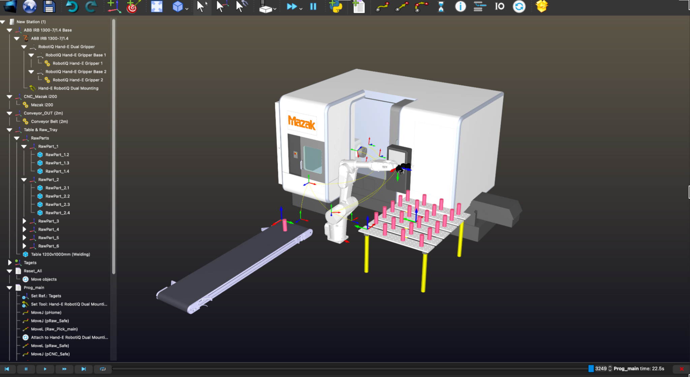
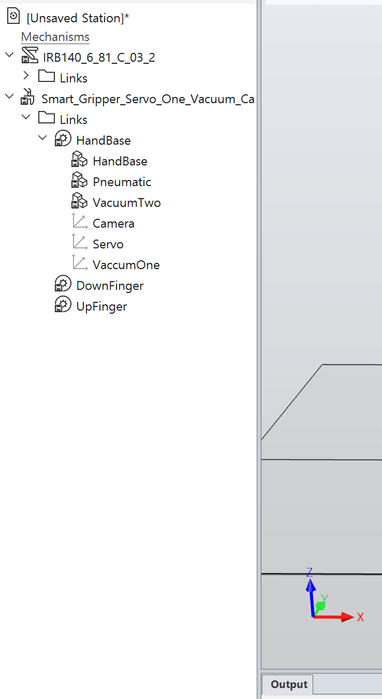
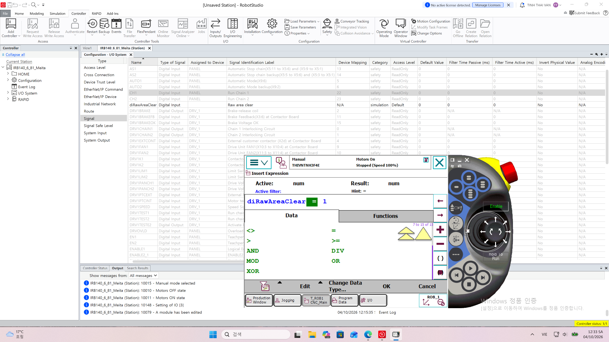
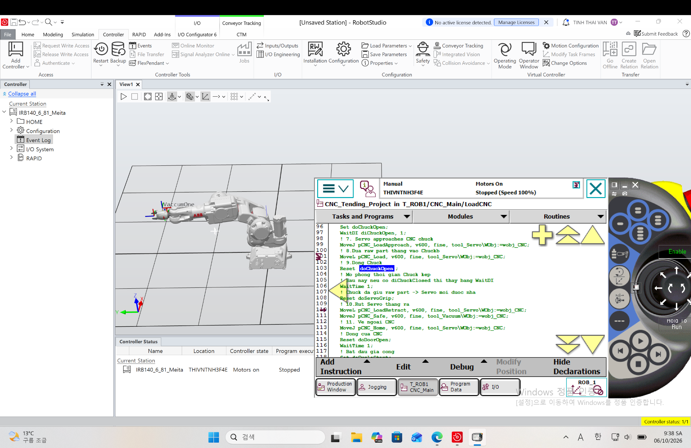
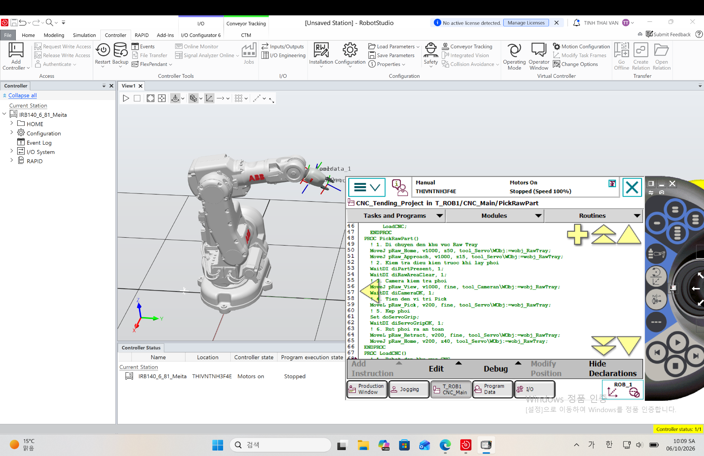
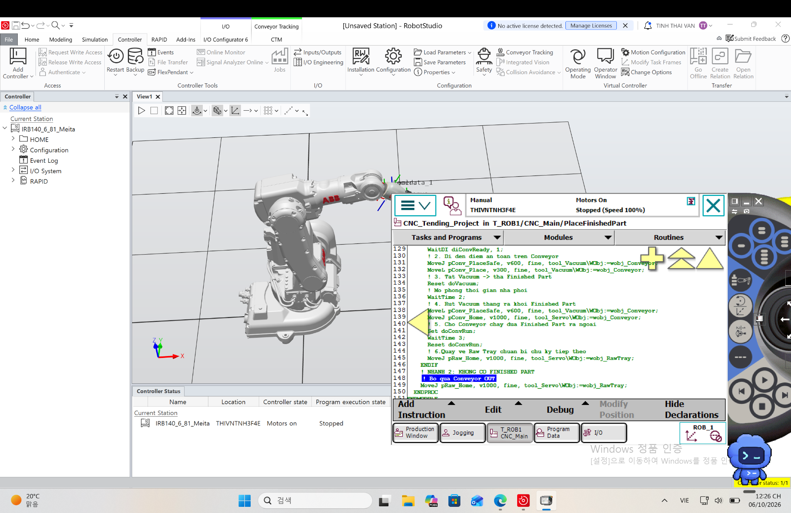
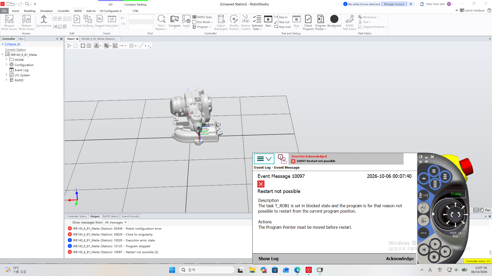

RoboDK → ABB RobotStudio / Virtual Controller / RAPID
산업용 로봇을 처음부터 학습하기 위해 약 15일간 집중 실습을 진행했습니다. RoboDK에서 CNC Machine Tending Cell의 작업 흐름을 구성한 후 ABB RobotStudio로 확장하여 TCP, WorkObject, Teaching, RAPID, Digital I/O 및 기본적인 Motion Troubleshooting을 직접 실습했습니다.
CNC 가공 공정에서 반복되는 소재 투입과 가공품 배출 작업을 로봇으로 자동화하는 과정을 학습하는 것을 목표로 했습니다. 단순히 로봇을 움직이는 것보다 Raw Part 확인 → CNC Loading/Unloading → Finished Part 배출까지 하나의 Sequence로 연결하는 데 중점을 두었습니다.

그림 1. RoboDK에서 구성한 CNC Machine Tending Cell
ABB Robot, CNC, Raw Part Tray, Conveyor OUT 및 작업 Target을 배치하여 CNC 자동화 공정의 기본 구조와 작업 흐름을 구성했습니다.
| RoboDK | Cell Layout, Target, Reference Frame, Tool, MoveJ/MoveL, Pick/Place 및 기본 Reachability를 실습했습니다. |
|---|---|
| RobotStudio | ABB Virtual Controller와 Virtual FlexPendant를 사용하여 ToolData/TCP, WorkObject, RAPID, Digital I/O, Sequence 및 Motion Error 대응을 학습했습니다. |
RoboDK에서 먼저 전체 Cell과 작업 흐름을 이해한 뒤, ABB 로봇의 Controller와 RAPID 프로그램 구조를 더 구체적으로 학습하기 위해 RobotStudio로 프로젝트를 발전시켰습니다.

그림 2. RobotStudio Smart Gripper 기능 프레임 확인
Camera, Servo, VacuumOne 프레임을 확인하고 하나의 Gripper에서 작업 목적에 따라 서로 다른 TCP를 사용하는 구조를 학습했습니다.
실제 Robot, CNC, PLC 및 Sensor를 보유하지 않았고 사용 가능한 시뮬레이션 기능에도 제한이 있었기 때문에 실제 생산 Cell과 동일한 Digital Twin을 구현하지는 못했습니다. 대신 Virtual Controller와 Digital I/O를 사용하여 설비의 상태와 신호를 가상으로 구성했습니다.
| 실제 Cell 요소 | 프로젝트에서의 대체 방법 |
|---|---|
| 실제 CNC / PLC | RAPID Sequence + Virtual Controller |
| Sensor / 확인 신호 | Virtual Digital Input (WaitDI) |
| CNC Door / Chuck | Digital I/O로 Open/State 신호 구성 |
| Servo / Vacuum | Output 명령 + Input 확인 신호로 로직 구성 |
| Vision 결과 | Camera TCP + diCameraOK 신호로 단순화 |
| 실제 Safety / PLC Interlock | 미구현 — 실제 Commissioning 경험 없음 |
프로젝트 범위: 실제 생산설비의 완전한 Digital Twin이 아니라 Robot Motion, CNC–Robot Sequence, I/O 및 RAPID 구조를 학습하기 위한 개인 시뮬레이션 프로젝트입니다.
tool_Camera — Raw Part 확인 위치
tool_Servo — Raw Part Grip 및 CNC Loading
tool_Vacuum — Finished Part Unloading
wobj_RawTray — 소재 공급 영역
wobj_CNC — CNC 작업 영역
wobj_Conveyor — 완성품 배출 영역
※ Tool/TCP와 WorkObject는 Virtual FlexPendant에서 직접 생성·설정했습니다. 이 항목은 화면 수보다 좌표계 개념과 실제 Teaching 과정 이해를 중심으로 정리했습니다.
실제 PLC와 CNC가 없는 환경에서는 Digital I/O를 이용해 센서와 설비 상태를 단순화하여 구성했습니다. WaitDI로 입력 조건을 확인하고 Set/Reset으로 출력 명령을 구성하면서 Robot–CNC Handshake의 기본 흐름을 연습했습니다.

그림 3. Virtual Digital Input 상태 확인
diRawAreaClear 등 가상 입력 신호를 설정·확인하면서 WaitDI 조건에 따른 Sequence 진행을 테스트했습니다.
전체 작업을 기능별 Procedure로 분리하여 공정을 이해하고 오류를 확인하기 쉽도록 구성했습니다.

그림 4. PickRawPart() RAPID Sequence
Raw Part 영역에서 Camera 확인, Servo Pick, 입력 신호 확인까지의 동작을 별도 Procedure로 구성하고 테스트했습니다.

그림 5. LoadCNC() RAPID Sequence
CNC Ready, Door/Chuck 상태, Finished Part Unload와 Raw Part Load 순서를 RAPID와 I/O 조건으로 구성했습니다.

그림 6. PlaceFinishedPart() RAPID Sequence
Finished Part 보유 여부에 따라 Conveyor OUT 배출 또는 Raw Tray 복귀로 분기하는 로직을 구성했습니다.
Finished Part를 Chuck에서 꺼낼 때는 부품 낙하를 방지하기 위해 Vacuum이 부품을 먼저 잡고 diVacuumOK 신호를 확인한 뒤 Chuck을 Open하도록 구성했습니다. Raw Part를 투입할 때도 Servo가 소재를 잡은 상태에서 Chuck을 먼저 고정한 후 Servo Grip을 해제하도록 순서를 구성했습니다.
※ 실제 PLC/CNC Interlock이 아니라 Virtual I/O를 이용한 학습용 Sequence입니다.
| 50050 Position outside reach | Event Log에서 Joint 작업 범위를 확인하고 Target 위치와 접근 자세를 수정한 뒤 다시 Teaching했습니다. |
|---|---|
| 50026 Close to singularity | 특정 자세에서 Singularity 경고를 확인하고 Jog 방향과 Target 자세를 변경하면서 회피 방법을 연습했습니다. |

그림 7. Motion Error 확인 및 Target 수정 실습
시뮬레이션 중 발생한 Motion Error를 Event Log에서 확인하고 Target 위치·자세를 수정하여 다시 테스트했습니다.
최종 CNC Machine Tending 프로젝트 테스트 영상 · 05:05
Robot Cell 구성부터 I/O 기반 Sequence 확인 및 연속 자동 사이클 테스트까지의 실습 과정
15일간의 집중 실습을 통해 Robot Cell 구성부터 Jog/Teaching, TCP, WorkObject, RAPID, Digital I/O, Sequence 구성 및 기본적인 Motion Troubleshooting까지 Virtual Controller 환경에서 직접 실습했습니다. 아직 실제 산업용 로봇, PLC, CNC를 연결하여 Commissioning한 경험은 없으며 Safety System과 실제 생산라인 Integration에 대한 지식도 부족합니다. 앞으로 실제 현장에서 선배 엔지니어의 지도를 받으며 Robot–PLC–CNC 신호 연결, Safety 및 실제 설비 Setup 경험을 쌓는 것이 다음 목표입니다.